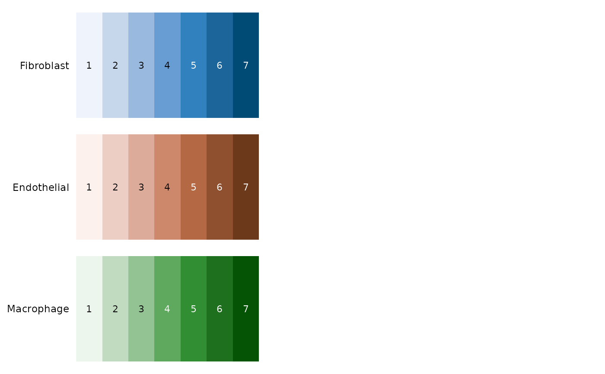

Builds, for each colour, a ramp from light to dark in the hue of that colour, e.g. to show a score or the expression of a gene signature in the colour of the cluster it marks. The ramp is built in HCL (polar CIELUV): only the hue is taken from the colour; lightness falls linearly from `light` to `dark`, and chroma rises from a near-grey start to a peak, then eases off so that the darkest colours do not turn muddy. Chroma is capped at the highest chroma sRGB can show at each hue and lightness, so the hue stays the same along the ramp. Ramps from different colours share the same lightness at each step, so that panels in different hues stay comparable.
Usage
ramp_palette(
cols,
n = 9,
light = 96,
dark = 30,
chroma = c(8, 70, 45),
peak = 0.6,
power = 1.2,
reverse = FALSE
)Arguments
- cols
A colour, a vector of colours or a list of colours (any colour R knows). Names are kept
- n
Number of colours per ramp, default is 9
- light, dark
Lightness (L*, 0 to 100) of the light and dark ends, default 96 and 30
- chroma
Chroma at the light end, at the peak and at the dark end, default `c(8, 70, 45)`
- peak
Position of the chroma peak along the ramp, from 0 (light end) to 1 (dark end), default 0.6
- power
Shape of the chroma rise up to the peak: 1 is linear, above 1 keeps the light end paler for longer. Default 1.2
- reverse
Whether to return the ramps dark to light, default is FALSE
Value
For a single colour, a character vector of `n` hex colours. For several colours, a list of such vectors, named by the names of `cols` (or by the colours themselves when unnamed). A grey input (no hue) gives a grey ramp
Examples
ramp_palette("#1F77B4")
#> [1] "#EFF4FC" "#D1DDEF" "#B1C7E5" "#8FB1DB" "#679DD3" "#3888C8" "#2773AC"
#> [8] "#135E91" "#004A76"
# One ramp per cluster colour, named by cluster
cluster_cols <- bt_palette("scanpy-20")[1:3]
names(cluster_cols) <- c("Fibroblast", "Endothelial", "Macrophage")
ramps <- ramp_palette(cluster_cols, n = 7)
ramps$Fibroblast
#> [1] "#EFF4FC" "#C6D6EB" "#9AB9DE" "#679DD3" "#3281BF" "#1B659A" "#004A76"
# \donttest{
show_palettes(ramps)

# }